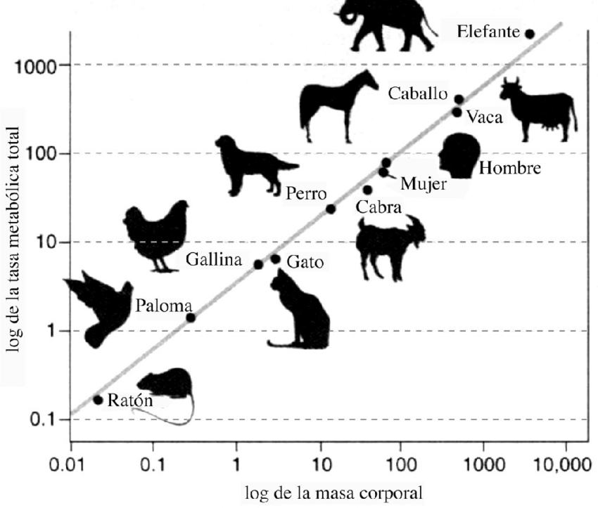

Nutrición de Precisión
Aplicación de la Ley de Kleiber: El tamaño determina no solo la cantidad, sino la composición química de la dieta. Analizamos los requerimientos metabólicos desde el Chihuahua hasta el Mastín.

Pequeños & Toy (<10 kg)
| Kcal/kg | Alta: 90 - 110 kcal/kg |
|---|---|
| Proteína | 28% - 32% (Alta digestibilidad) |
| Grasa | 18% - 22% (Fuente primaria de energía) |
| Frecuencia | 3 - 4 veces al día (Mínimo) |
Fundamento Clínico y Fisiológico
¿Por qué tantas calorías?
Debido a su alta relación superficie-volumen, los perros pequeños disipan calor corporal muy rápido. Su metabolismo basal trabaja a marchas forzadas, requiriendo una densidad calórica por gramo muy superior.
Peligro: Hipoglucemia
Tienen reservas hepáticas de glucógeno insignificantes. Un ayuno prolongado causa una caída crítica de glucosa (hipoglucemia neuroglucopénica). La alimentación frecuente es vital.
Mecánica Dental
La falta de espacio provoca apiñamiento dental severo. Se requiere una croqueta abrasiva y aditivos químicos (Polifosfatos) que secuestren el calcio de la saliva para prevenir sarro.
Medianos (10 - 25 kg)
| Kcal/kg | Estándar: 60 - 75 kcal/kg |
|---|---|
| Proteína | 26% - 30% (Mantenimiento muscular) |
| Grasa | Moderada (12% - 18%) |
| Clave | Ácidos Grasos Esenciales (Omega 3/6) |
| Riesgo | Obesidad y Dermatitis Atópica |
Fundamento Clínico y Fisiológico
¿Por qué varía tanto la ración?
Es el grupo más heterogéneo. El requerimiento calórico depende de la función. Alimentar a un perro mediano sedentario con dieta "Performance" causa obesidad inmediata.
Dermatología Preventiva
Razas como Terriers y Bulldogs tienen barrera cutánea débil. Se requiere enriquecimiento con Ácido Linoleico y EPA/DHA para reducir la inflamación sistémica.
Sensibilidad Lipídica
Razas como el Schnauzer tienen defectos en el metabolismo de grasas (Hiperlipidemia). Requieren niveles moderados de grasa para evitar pancreatitis.
Grandes & Gigantes (>25 kg)
| Kcal/kg | Reducida: 35 - 55 kcal/kg |
|---|---|
| Proteína | 24% - 28% (Controlada) |
| Grasa | Baja/Controlada (10% - 14%) |
| Calcio | Estricto 0.8% - 1.2% (No suplementar) |
| Protocolo | Comedero Lento + Reposo |
Fundamento Clínico y Fisiológico
¿Por qué menos calorías y calcio?
El objetivo es ralentizar el crecimiento. Un crecimiento acelerado provoca que el esqueleto inmaduro colapse bajo el peso muscular (Displasia).
Prevención GDV (Torsión Gástrica)
En pechos profundos, el estómago puede rotar si está lleno y hay movimiento. Se requiere croqueta grande, reposo post-comida y nunca dar una sola comida al día.
Soporte Cardíaco y Articular
Debido a la carga masiva, la dieta debe ser terapéutica: Condroprotectores para el cartílago y Taurina/L-Carnitina para prevenir la Cardiomiopatía Dilatada (DCM).
Galería Nutricional

Nutrición Equilibrada por Tamaño
Cada raza requiere una composición nutricional específica. Los perros pequeños necesitan mayor densidad calórica debido a su metabolismo acelerado, mientras que los grandes requieren un control estricto de energía para evitar problemas articulares y cardíacos.
- ✓ Proteína adaptada al tamaño
- ✓ Grasa como fuente primaria de energía
- ✓ Minerales balanceados según edad
- ✓ Digestibilidad optimizada
Control de Porciones y Frecuencia
La frecuencia y cantidad de alimentación varía significativamente. Los pequeños requieren 3-4 comidas diarias para evitar hipoglucemia, mientras que los grandes benefician de 2 comidas con reposo post-alimentación para evitar torsiones gástricas.
- ✓ Pequeños: 3-4 comidas/día
- ✓ Medianos: 2-3 comidas/día
- ✓ Grandes: 2 comidas/día + reposo
- ✓ Comederos lentos para gigantes